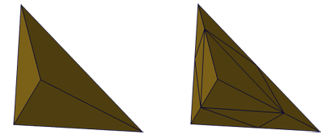

Connecting RefineTetras to a TetraGrid allows for a global or local refinement, producing a refined copy of the input grid. For each refinement level a tetrahedron is subdivided by eight tetrahedra via edge bisection.

In case global refinement was chosen the entire tetrahedral grid is successively refined according to the refinement level. The amount of tetrahedra is always increasing by a factor of 8, thus resulting in huge meshes for higher refinement levels (1, 8, 64, 512, 4096, etc.). Due to the refinement strategy the element quality remains unchanged. Hence the element quality slider will not influence the resulting grid.
Local refinement will be applied to the currently selected (i.e. visible) tetrahedra of the input grid. Therefore a GridVolume has to be connected to the grid. In case all tetrahedra are selected RefineTetras issues a warning, asking for a global refinement. Having only a subset of the grid selected (e.g. using the Buffer or the Draw Selection), all selected tetrahedra are refined according to the above scheme. In order to keep the mesh consistent adjacent tetrahedra have to be refined as well. The strategy for improving the resulting element quality can be controlled via the slider.